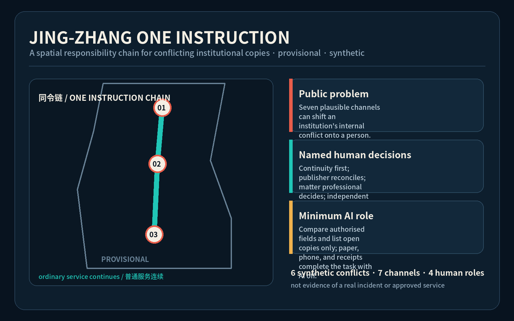
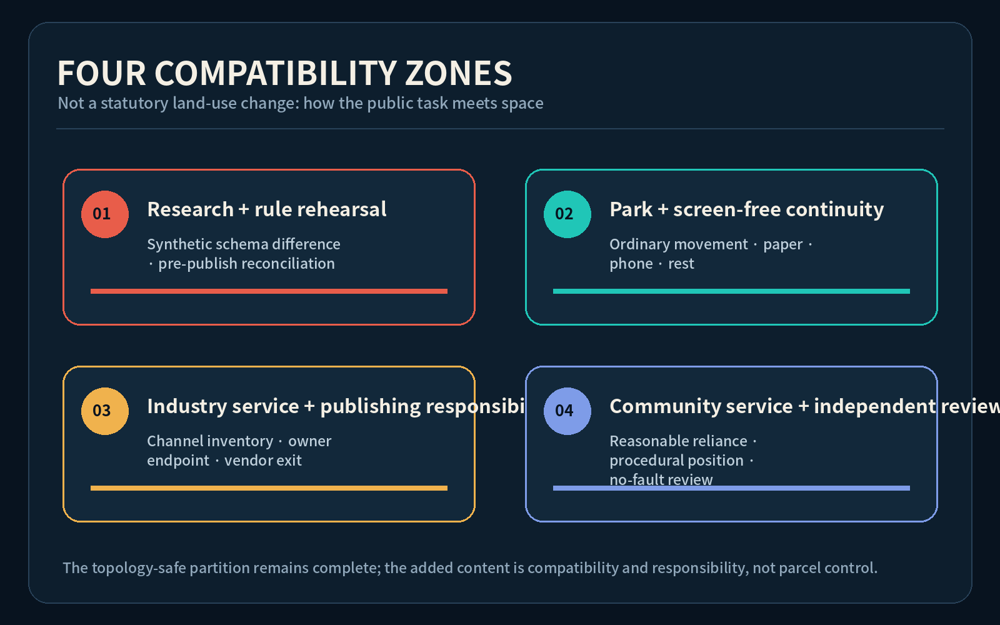
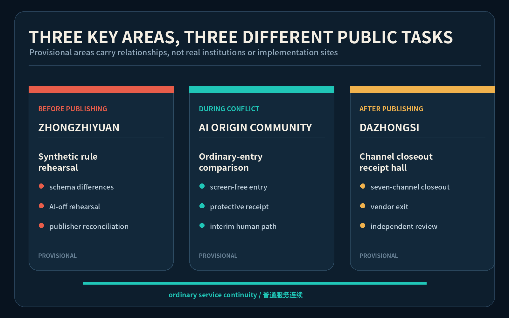
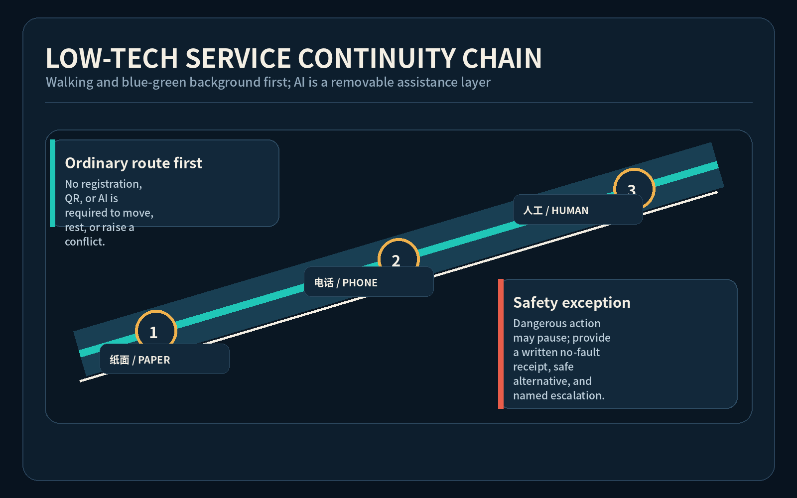
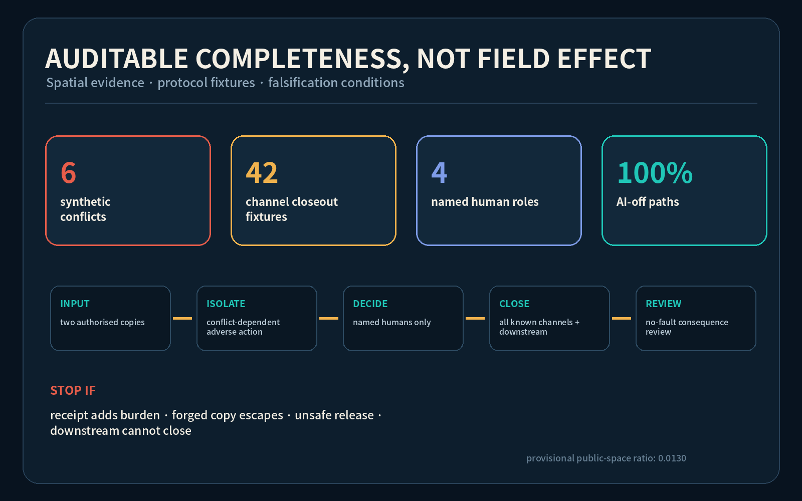

JING-ZHANG ONE INSTRUCTION: people should not bear the cost of contradictory institutional channels
A spatial public task for discovering contradictory institutional instructions, preserving an ordinary path, reconciling at the publisher, closing every channel, and independently reviewing harm; every case is synthetic and every spatial move is provisional.
JING-ZHANG ONE INSTRUCTION / 京张同令台
When institutional channels contradict one another, the person should not bear the conflict cost. Status: open co-creation concept; provisional geometry; synthetic rehearsal; no government, institutional, or professional implementation approval.
Design Basis and Source List
This proposal answers the Jing-Zhang AI Innovation Belt's industry, spatial, and public-governance brief with JING-ZHANG ONE INSTRUCTION. When one institution's sign, paper form, hotline, staff script, web app, robot, or API contradicts another, the service user should not have to guess which copy is authoritative or bear an adverse return, missed appointment, deadline loss, or negative marker solely for reasonably following either visible instruction. The design spatialises discovery, interim continuity, source reconciliation, all-channel closeout, and no-fault review as one public task rather than another “truth screen” Source Source Depth.
The authority layer is limited to registered project documents, cleared taskbook material, public standards, and provisional geometry. All six conflicts are synthetic and contain no personal data. They do not demonstrate real institutional harm, create a legal opinion, decide eligibility, promise compensation, or establish a right to restore a deadline. Public materials on generative AI, accessibility, and parallel traditional service paths only constrain the inquiry Source Source Source.

The site and three key areas remain repository provisional rough geometry and appear as low-contrast dashed constraints. They are not official redlines, real institution locations, jurisdictions, or precise area evidence. Every ratio and conceptual footprint must be recalculated when official polygons, controls, ownership, utilities, fire, heritage, and operating conditions arrive Spatial data Metric.
Three-Level Scope Framework
At the coordinated-research scale, the proposal asks whether a world-class AI ecosystem can make publishers responsible for reconciling their own copies. At the overall-design scale, it organises a paper-and-screen-free continuity spine, three public thresholds, and three backstage responsibility desks. At the key-area scale, it differentiates synthetic rule rehearsal, ordinary-entry comparison, and downstream closeout review. The compliance matrix prevents this governance proposition from remaining outside spatial deliverables Standard Depth.
The structure is one continuity chain, three One Instruction nodes, seven publishing channels, and four named human roles. The conceptual chain links paper, telephone, accessible, and staffed entry points along the heritage-park background. The nodes are a rehearsal room at Zhongzhiyuan, a comparison hall in the AI Origin Community, and a closeout receipt hall at Dazhongsi. The roles are duty service continuity steward, rule publishing steward, matter professional steward, and independent redress reviewer. AI may only compare authorised fields and list open copies; the task remains complete with AI physically off Spatial data Metric Metric.

Every spatial move is a conceptual reference for professional teams. It identifies no real service institution, changes no statutory land use, assumes no retain-renovate-demolish decision, and treats no rough rectangle as a parcel. If professional review shows that the task belongs entirely inside existing facilities, the three nodes can become movable desks, wall pockets, and backstage responsibility positions rather than new buildings Spatial data Depth.
Coordinated Research Area: Industry and Future City Research
A world-class AI ecosystem needs more than models, compute, data, talent, and capital; it also needs public infrastructure that makes cross-channel commitments comparable, responsibility locatable, and failure reversible. Six public mechanisms are compared: AI Verify's testable governance tools, UK AISI's independent evaluation capacity, NIST AI RMF's lifecycle responsibilities, the Netherlands Algorithm Register's owner visibility, Helsinki's explanation and feedback entry, and EU TEFs' sector test facilities. Only the questions of testing, disclosure, responsibility, feedback, and professional rehearsal are extracted; laws, spatial models, brands, interfaces, and institutional powers are not transplanted Source Source Source.
The ecosystem map links rule/interface rehearsal at Zhongzhiyuan, public-service co-design in the Origin Community, downstream interoperability at Dazhongsi, and legal, accessibility, standards, and operations support in the Zhongguancun service wing. The Xiaoyuehe scenario wing supports ordinary-route and low-tech fallback rehearsals. No reliable source provides investment, enterprise, compute, output, or recruitment figures, so none are invented. An original identity direction shows two conflicting red rails stopping at a named human responsibility pin while a teal ordinary-service line continues; the Chinese and English wordmarks scale without external marks or font assets Standard Metric.
The six comparators are analytical references, not “best practices” automatically fit for Haidian. AI Verify asks whether requirements can be tested; AISI asks who can evaluate independently; NIST asks who owns lifecycle risks; public registers ask whether owners and feedback entries are visible; TEFs ask how specialist facilities support testing. ONE INSTRUCTION adds a different complete task: protect reasonable reliance during conflict, make the publisher reconcile sources, and close every known channel and downstream copy.
Overall Design Area: Urban Renewal and Regulatory-Plan-Level Urban Design
The overall design does not treat interface uniformity as the solution. It makes publishing, use, source reconciliation, closeout, and redress spatially reviewable: ordinary entrances retain a removable comparison desk, paper wall pockets, telephone, and accessible waiting surface; backstage areas hold the rule-publisher desk and actual channel inventory; every sign, hotline, staff script, web app, robot, and API has an accountable endpoint and closeout receipt. During conflict, only adverse automation that depends on the contradictory instruction is isolated. A dangerous action may pause, but the institution must provide a written no-fault receipt, safe alternative, and named escalation Spatial data Depth.
The topology-safe land-use partition remains intact but is recast as four conceptual compatibility zones: research and rule verification; heritage park and screen-free fallback; industry services and publishing responsibility; community services and no-fault review. None is a statutory land-use adjustment. The three footprints illustrate the minimum relationship between rehearsal room, comparison hall, and receipt hall. They are not existing buildings, ownership evidence, demolition proposals, construction commitments, or engineering findings Standard Spatial data Metric.
The renewal method reuses ordinary entrances and backstage desks before adding anything fixed. Components must be removable, usable without accounts, readable during outages, and functional with AI off. FAR, height, setbacks, road redlines, parking, utility capacity, and real service radius remain pending official data rather than speculative numbers Depth Spatial data.
Detailed Design of Key Areas
The Zhongzhiyuan concept node hosts synthetic rule rehearsal: without real cases or operations data, it tests version fields, channel owners, conflict isolation, AI-off completion, and downstream receipts. The rule publishing steward—not a model—determines the applicable version. The AI Origin Community concept node hosts ordinary-entry comparison: people without smartphones, with low digital literacy, across languages, with accessibility needs, accompanying dependants, or near a deadline can raise a conflict at the same normal entrance and receive a non-eligibility-granting protective receipt and temporary human path. Dazhongsi hosts channel closeout interoperability, closing signs, paper, hotline, staff scripts, apps, robots, and APIs while an independent reviewer addresses prior adverse consequences Spatial data Spatial data Spatial data.

All three provide ordinary-route priority, screen-free entry, removable furniture, visible responsibility, and a quiet review position, but their tasks differ: the north tests consistency before publishing; the middle protects reasonable reliance; Dazhongsi tests complete post-publication closure. Real siting requires renewed review of service type, legal notice, safety exceptions, accessibility, heritage, fire, and operating responsibility. If actual channels or a lawful interim path cannot be enumerated, the node stays closed Depth Metric.
Three original civic-landmark directions are the One Instruction Gate, the Version Steward Desk, and the Closeout Receipt Beacon. They expose responsibility and channel status without displaying personal cases. Recognition records only public contributions, repair methods, and reproduced synthetic tests Metric Source.
AI Innovation Ecosystem, Personas, and AI+ Scenarios
Six synthetic personas cover a near-deadline visitor without a smartphone, a wheelchair or low-vision visitor, a cross-language user, an accompanying caregiver household, a frontline worker, and rule-publishing/matter professionals. No identity or trajectory is included, and personas cannot drive scoring, recommendation, or risk classification. Raising a conflict must never label a person difficult, fraudulent, incapable, or risky; records retain only minimum channel, version, time, and de-identified closeout state Metric Source.
The twelve scenario cards are: site sign versus booking app; accessible-route sign versus robot geofence; paper versus hotline materials; Chinese versus English hours; consent sheet versus API; staff withdrawal script versus kiosk; AI physically off; absent steward; vendor exit; forged-copy distinction; emergency safety exception; and independent review of an adverse consequence. Every card carries the trigger, four named roles, interim path, seven-channel inventory, failure outcome, and AI-off route Metric Spatial data.
Three industry rehearsals are a structured-rule schema difference test at Zhongzhiyuan, a screen-free/cross-language/accessibility continuity rehearsal in the Origin Community, and vendor/downstream closeout-receipt interoperability at Dazhongsi. AI only compares authorised text or fields, flags version/unit/owner mismatch, and drafts a copy map for humans. It cannot decide legal or business effect, eligibility, penalty, honesty, safety exception, or automatic overwrite. The local verifier confirms six cases, forty-two channel fixtures, and complete non-AI paths, but this proves package consistency rather than field effectiveness Metric Metric Metric.
Land Use, Building Scale, and Retain-Renovate-Demolish Strategy
The land-use layer continues to use valid national codes and fully covers the provisional boundary; the new information is a compatibility and public-task annotation rather than an invented category. Research land may host synthetic rule rehearsal; park green space keeps ordinary movement, rest, and paper guidance first; industry-service land may host publishing responsibility and interface rehearsal; community-service land may host human continuity and independent review. Every use remains subject to statutory planning and professional confirmation Standard Spatial data Depth.
The three conceptual footprint areas support diagrammatic spatial review only and are not a development quantum. The retain-renovate-demolish method is “survey first, decide later”: retain objects with safety, cultural, or everyday-service value; prefer reversible adaptation where light components suffice; discuss demolition or new build only after professional assessment, ownership, controls, and public process. Those inputs are unavailable, so all objects remain method_only_pending_survey; total floor area, FAR, height, density, and investment are unknown Depth Depth Metric.
The component library contains a folding comparison desk, bilingual paper pockets, tactile responsibility plate, telephone position, seven-channel magnets, a non-personal protective receipt, and a closeout board. Components may be embedded in ordinary entrances or removed after rehearsal; they must not obstruct accessible travel, egress, heritage interfaces, or ordinary rest. Fixed dimensions and materials require ergonomic, fire, heritage, and maintenance co-design Spatial data Source.
Transport, Rail, Municipal Infrastructure, and Public Services
The transport strategy proposes no new road. A conceptual low-tech continuity chain links the three nodes through paper guidance, telephone entry, and human takeover information. East-west links remind professional teams to test continuity between ordinary entrances, transit access, and accessible routes. Every line is an analytical design suggestion, not an existing road, road redline, bridge, tunnel, rail alignment, or engineering design Spatial data Depth.

Municipal and digital infrastructure follows paper as the sovereign layer, digital as an aid. During power, network, or AI failure, desks, telephone, version sheets, and signed receipts remain usable. Digital systems retain only minimum version metadata and open-channel status, never real-case profiles. Before any real interface, the publishing steward must name data controller, retention, access, and downstream recipients; vendor exit transfers the open list and visibly invalidates old copies Depth Metric.
Accessibility and cross-language support cannot become extra appointments. The ordinary entrance should support tactile responsibility information, clear bilingual text, seated reach, quiet conversation, human explanation, and companions. Robots and kiosks cannot block the only accessible route. Actual obligations in medical, social-security, finance, or utility-payment contexts require applicable law and professional advice; this concept does not derive general legal conclusions from design intent Source Source.
Blue-Green Network, Public Space, and Urban Character
The Jing-Zhang Heritage Park is ordinary urban life first, not a backdrop owned by AI exhibition. Green space keeps walking, resting, shade, non-commercial stay, and screen-free information. ONE INSTRUCTION components occupy only removable small interfaces and cannot turn an everyday route into a mandatory test entrance. Provisional green and public-space ratios are package calculations that must be recomputed on official data Spatial data Spatial data Metric.
The character system takes cultural inspiration from the responsibility logic that one railway working diagram cannot make passengers choose between mutually exclusive routes. It does not copy signalling equipment or claim public services are governed by railway rules. Two thin red lines represent conflicting instructions and stop at a deep-blue human responsibility pin; a teal line shows ordinary service continuing; dashed frames always say provisional. Signs use no faces, real cases, enterprise marks, or official emblems. “ONE INSTRUCTION · HUMAN DECISION · CHANNEL CLOSEOUT” explains the identity internationally Standard Depth.
Public art displays a contestable closure rather than “one truth”: who published, who isolates conflict-dependent adverse automation, who determines the applicable version, who decides the matter, who addresses consequences, and which channels remain open. Line type, number, text, and tactile form supplement colour. Motion defaults off and respects reduced-motion. Recognition walls list public contributors and reproduced synthetic repairs only Source Metric.
Renewal Projects, Implementation Policy, and Phasing
Six scoped projects make the implementation list: JZ-SI-01 paper comparison desk; JZ-SI-02 six-case synthetic library; JZ-SI-03 rule-publisher responsibility desk; JZ-SI-04 seven-channel closeout board; JZ-SI-05 screen-free/accessibility continuity rehearsal; JZ-SI-06 independent review and exit handover. Each begins with desk rehearsal, professional verification, and stop conditions rather than real cases or personal data Spatial data Depth.
Near term uses paper artefacts and synthetic rules indoors to test whether receipts become evidence burdens, AI-off completion works, and safety exceptions provide written alternatives. Mid term may examine cross-channel schemas and accountable endpoints. Long term may test a narrow real process only after service, legal, accessibility, safety, privacy, operations, and affected-rights representatives agree. If channels, owners, safe interim path, or exit handover cannot be enumerated, the pilot remains closed Spatial data Depth.
The annual operation concept is One Instruction Open Week: publishers bring synthetic copies; developers repair schemas; user representatives test ordinary entry; specialists review safety exceptions; only de-identified conflict types, duration, and closure rate are shared. It is not a confirmed event and promises no investment, policy, or recruitment. Long-term operation combines a public version repository, quarterly offline rehearsal, annual cross-language/accessibility review, and vendor-exit rehearsal. Exit invalidates copies, transfers open items, and restores ordinary space Source Source.
Metrics, Area Recalculation, and Compliance Matrix
Metrics have three levels. Spatial metrics recalculate provisional site area, conceptual footprints, and green/public-space ratios. Protocol metrics count six synthetic conflicts, seven channel types, forty-two closeout fixtures, four named roles, and AI-off completion. Task metrics count twelve scenarios, six personas, three industry rehearsals, three landmarks, and six ecosystem comparators. Protocol numbers establish internal coverage only; they do not measure institutional performance, legal effect, user satisfaction, or likelihood of a review score Depth Metric Metric.

A synthetic case passes only if it contains a conflict trigger, four roles, isolation limited to conflict-dependent adverse action, ordinary human path, emergency safety exception, seven-channel closure state, no-negative-marker failure outcome, and AI-off route. Falsifiers include a receipt becoming a new evidence burden, forged material escaping isolation, dangerous action being wrongly released, a publisher unable to locate downstream copies, or a service unable lawfully to preserve procedural position. Any falsifier narrows or stops the concept; more media or version numbers cannot hide it Metric Metric.
The compliance matrix maps announcement items 1.3–1.5 and agent.1–agent.6; the standards matrix maps spatial, land-use, and expression authority; the design-depth matrix states what is complete with available data and what remains limited. Four-gate PASS means format, topology, offline packaging, and professional evidence are reviewable—not approved, implemented, or field-effective Standard Source.
Risk, Copyright, and Compliance
The highest risk is misstating conflict protection as automatic eligibility or a statutory reliance doctrine. A protective receipt only records conflict between two authorised institutional instructions. It does not decide legal or business effect. The matter professional still decides eligibility, supplementation, pause, referral, or refusal under applicable rules. Deadlines and procedural positions are preserved only within lawful institutional authority; independent review cannot promise compensation or a legal outcome Source Depth.
A second risk cluster covers forged copies, emergency safety, privacy, and responsibility drift. The entrance checks channel provenance without making the person prove authority; dangerous actions may pause and escalate; only channel, version, time, and closeout state are retained; AI cannot decide effect or overwrite. If an owner is absent, downstream parties fail to receipt, a vendor exits, or ordinary paths fail, the pilot stays closed and old copies are visibly invalidated Spatial data Source.
All text, synthetic data, geometry semantics, diagrams, PDFs, and offline pages are original to this package. They use system Noto Sans CJK and open-source Python tools without redistributing font files. No peer proposal name, drawing, code, or unique object is copied. External pages are text comparators with publisher, URL, access date, use, and limitation recorded; no image, logo, person, audio, video, or trademark is reused. Figures are conceptual explanation, not site observation Source Source.
References
Core authority consists of the project announcement, cleared agent taskbook, repository source registry, provisional geometry, public urban-design and regulatory-planning standards, and land-use classification guidance, plus narrowly bounded public materials on generative AI, accessibility, and parallel traditional service paths. Six international mechanisms are method comparators only and do not support spatial controls, legal conclusions, or implementation promises Source Source Source.
Full publisher, title, path or URL, access date, licence note, use, and limitation are in sources.json; formulas are in metrics.json; missing inputs and recalculation triggers are in assumptions.json; authority order, standards, task response, and design depth sit in GeoJSON and the three matrices. No reader should promote background or provisional material to official status or infer real-service performance from synthetic verification Source Source Depth.
This is an open co-creation proposal for planning, public service, accessibility, legal, safety, privacy, operations, and affected-rights representatives to falsify and deepen. It does not replace statutory planning, professional design, government approval, case decisions, or institutional authorisation. When official data, authorised real-process research, or maintainer rules change, the source, geometry, metric, figure, PDF, page, and self-check chain must update together—not one copy alone.